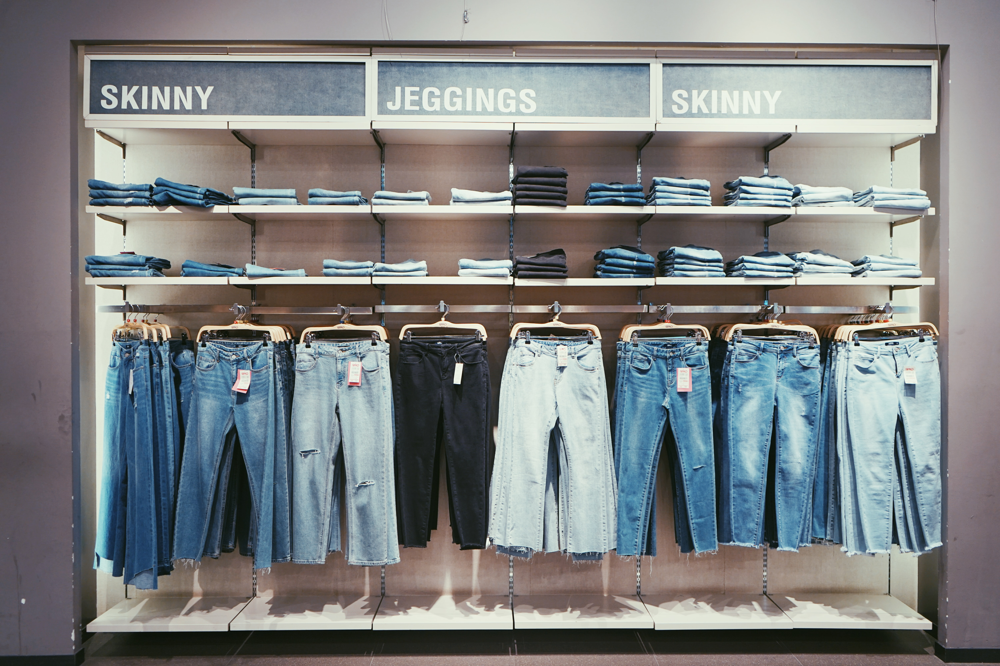
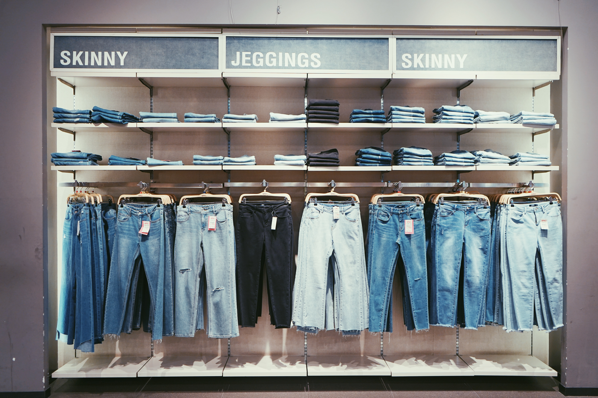
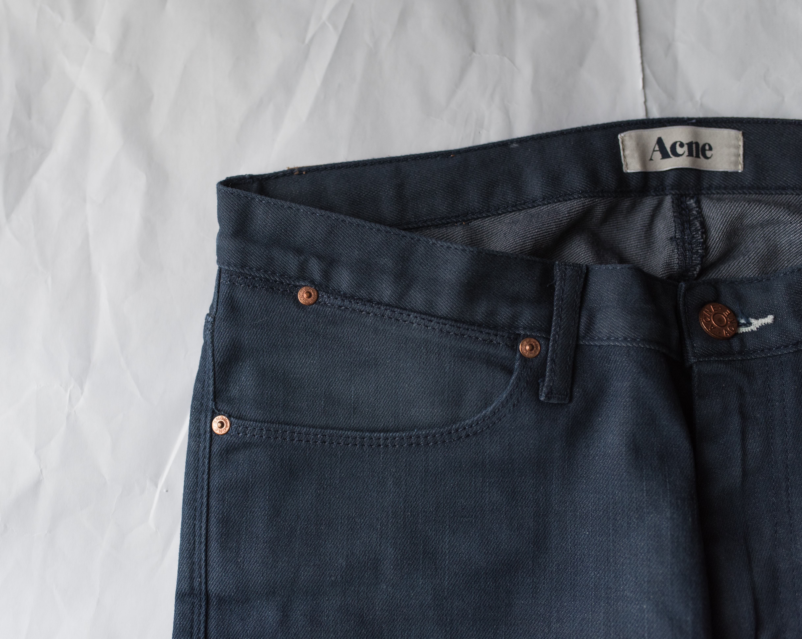
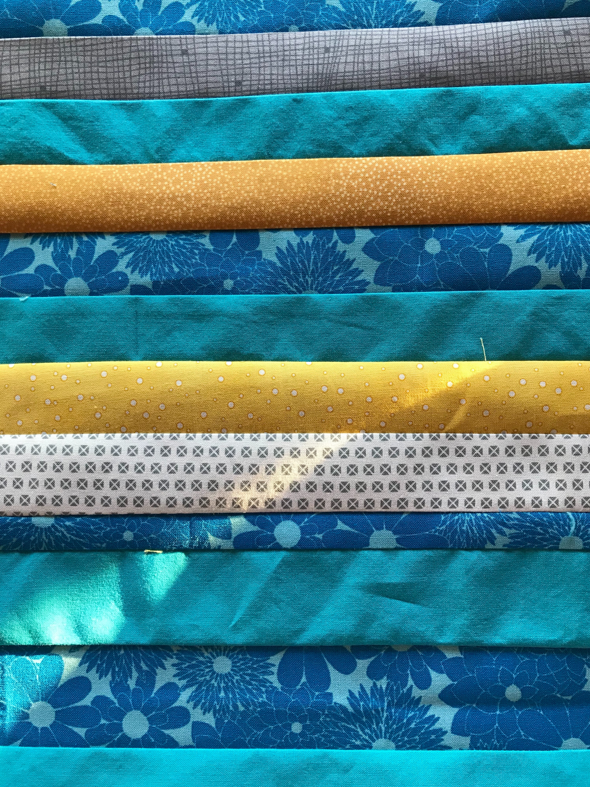
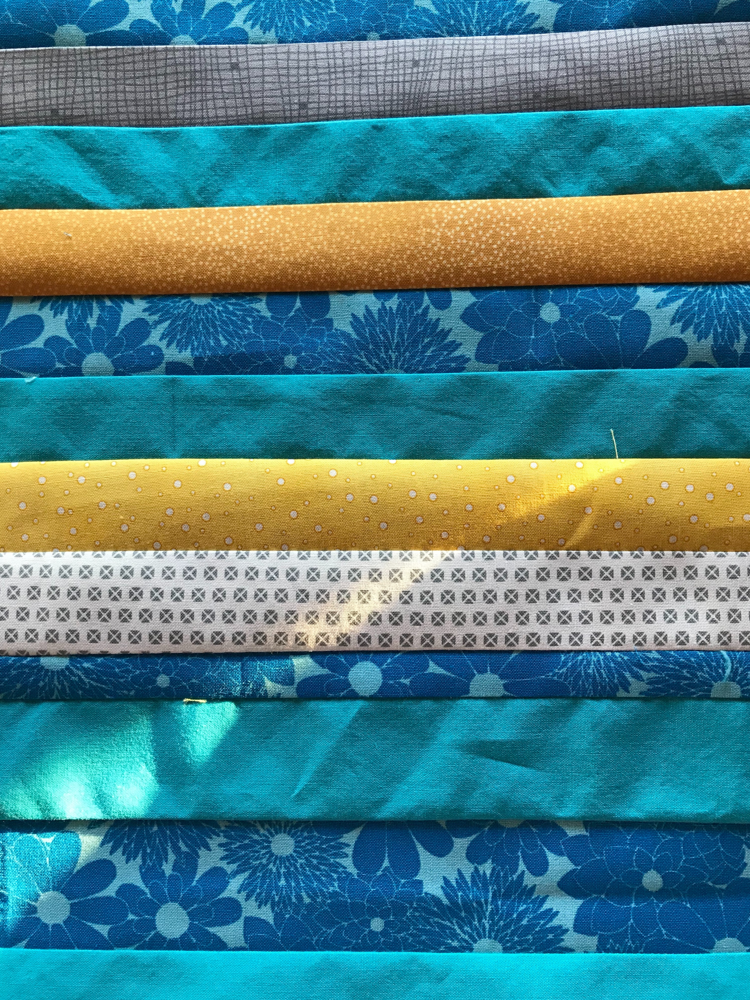

Overview
Purpose
We offer a service that will swap your pockets with better pockets that fit your specific needs. We don't just intend to get you pockets that are bigger and more functional, but softer and better fitting as well
Audience
Better pockets is for women who are tired of having pockets that are too small and not actually useful. Our customers are usually between the ages of 16-25. We're specifically targeting people who are tired of having to cary around a purse just to hold their phone. Many women have a difficult time finding a pair of pants that fit and nothing is more descuraging than finding that the one pair that actually fits doesn't even have pockets. We are looking to solve that persons pain point. Every women wears pants (obviously), however it is a more particualar type of women that we are aiming to please. We're marketing towards the women who want's everything about what they're wearing to be perfect including their pockets. This type of person is most likely to be more on the wealthy side.
Branding
Website Logo

Style Guide
Color Palette
Palette URL: https://coolors.co/60b2e6-3582b2-fea78b-ffccae-ffffff| Primary | Secondary | Accent 1 | Accent 2 |
|---|---|---|---|
| [#60b2e6] | [#fea78b] | [#ffffff] | [#3582b2} |
Typography
Heading Font: [Cormorant Garamond]
Paragraph Font: [Noto Sans]
Normal paragraph example
Once upon a time, in a fast-food restaurant not too far from here, there was a chicken nugget named Nug. Nug was not like any other chicken nugget, he dreamed of adventure and seeing the world beyond the confines of his greasy box.
Colored paragraph example
One day, Nug's dream came true when he found himself accidentally falling out of the box and onto the floor. This was the perfect chance for Nug to embark on his adventure. He had heard stories of the world outside the restaurant and couldn't wait to explore it.
Navigation
Site Map
Content
Home page
Main
For some reason, pant manufacturers think that women only need to fit a couple of pennies in their pockets or believe that we don’t need them at all. It’s hard enough to find a pair of pants that fit let alone having to worry about the pockets. If you find a good-fitting pair of pants, replacing the terrible pockets on your own is difficult and not worth the trouble, but you don’t have to worry about that because we will do it for you!
How The Service Works
There are two different options when purchasing our pocket replacement service. Before you make a purchase you will be asked whether you would like to purchase a new pair of pants, or use an existing pair. If you are purchasing a new pair, rather than inputting your own address in checkout, input our address. If you would have the pockets of a pair of pants that you currently own swapped, first make sure that they are washed and clean, then have them shipped to our address. When we receive the item we will replace the pockets according to your specifications and then send them directly back to you.
Images for the Home page
 

Shop
Sizing
Getting the right-sized pocket is actually easier than you might think. During the checkout process, you will input your pant size, glove size, and whether you want your pocket to be snug, standard, or spacious. With this information, we will be able to determine which size pocket will be perfect for you.
Fabric
At Better Pockets, we offer multiple types of fabric to ensure that your pockets are exactly to your liking. In addition to fabric types, we offer different fabric patterns because we want you to be happy with your pockets inside and out. We offer options such as satin, cotton, denim, and nylon.
The Process
First, we remove the old pocket by carefully unpicking the stitching that holds the old pocket in place. Next, we cut a new pocket using soft fabric in a size that fits your needs. Finnaly, we use a heavy-duty needle and a strong thread to sew the pocket in place.
Purchasing Multiple Pairs
You may be surprised to learn that the biggest cost associated with your purchase will not be the replacement service, but the shipping costs. Because of this, we recommend that rather than sending in a single pair of pants, send in multiple pairs that need adjusting and ship them together so that you can save on shipping costs.
Images for the Page 2
About
Common Questions
How do I figure out my glove size?
1. Measure your dominant hand. Your dominant hand is typically larger than your non-dominant hand, so it's important to measure the correct one. 2. Measure the widest part of your hand. This is usually just below your knuckles, but it can vary depending on the shape of your hand. 3. Measure the length of your hand. Measure from the tip of your middle finger to the base of your palm. 4. Use a sizing chart to determine your glove size. Glove sizes are typically measured in inches, so use your measurements to find the size that matches.
How long will it take?
There are multiple factors that determine how long it will take to process the item and have it back to you including the number of items sent in, which type of alterations you select, as well as shipping times. We will do our best to ship your item back to you as quickly as possible. Most orders will only take 1-2 weeks.
What is your refund polocy?
At Better Pockets, we want to ensure that you are %100 satisfied with your purchase. If you find that there is anything wrong with the alterations we will pay to have the item repaired or offer a full refund if the request is made within 30 days of purchase. To request a refund, take a photo of the damaged item and write a description of any issues you have encountered. Email refund requests to: BetterPockets@gmail.com. If the request is approved, refunds will be issued within 3-5 days.
If you have any questions on how to return your item to us, please contact us at: BetterPockets@gmail.com or Text us at: 555-324-1538
Images for the Page 3
 

Wireframes
Create three wireframes for your site. One for each page and list them here
Home
[Any additional details about home that the wireframe does not make clear]
[Page 2]
[Any additional details about page 2 that the wireframe does not make clear]
[Page 3]
[Any additional details about page 3 that the wireframe does not make clear]